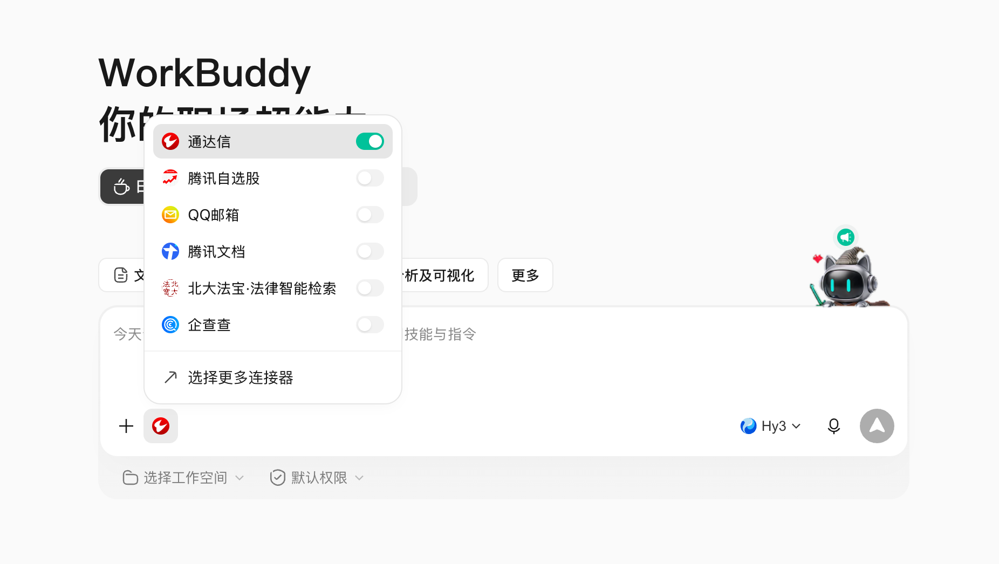

第 01 页 / 共 06 页 · 案例四
只靠提示词 + 一个 MCP
借 AI 之力，
普通人也能专业选基金。
本案例共六页课程，下面三步的提示词都可以一键复制。
数据口径说明：本案例用 通达信 MCP，基金池覆盖场内 ETF + 场外主动公募基金。三步筛选的数据获取方式不同：
① 框范围成立年限与年化——服务端一步直筛，最先做、最省事；
② 选人经理任职年限——逐只查询基金经理，再卡阈值；
③ 看稳近 1 年最大回撤——逐只取回撤数据，最后做、最精细。
具体阈值与口径见各步骤提示词。
① 框范围成立年限与年化——服务端一步直筛，最先做、最省事；
② 选人经理任职年限——逐只查询基金经理，再卡阈值；
③ 看稳近 1 年最大回撤——逐只取回撤数据，最后做、最精细。
具体阈值与口径见各步骤提示词。
第 02 页 / 共 06 页
开始前：
准备好两件事
本案例不用写代码，只要一个 AI 客户端，再接上一个数据接口：
① 安装 Workbuddy
能对话、能调用工具的 AI 客户端，本案例的操作台。
能对话、能调用工具的 AI 客户端，本案例的操作台。
② 打开通达信 MCP
在 Workbuddy 里连接 tdx-connector，基金数据就来自这里。
在 Workbuddy 里连接 tdx-connector，基金数据就来自这里。

在 Workbuddy 中按上图添加并授权通达信 MCP，连上后就可以发下面的提示词了。
第 03 页 / 共 06 页
步骤 ①：
先「框范围」。
别一上来就抠细节。先用通达信在服务端把「成立满 5 年、平均年化 > 10%」的主动管理基金（排除 ETF）一次性框出来。这一步最省事，一次调用就出清单。
若当前会话还没连上通达信 MCP，请先完成上一页的前提条件（安装 Workbuddy 并打开通达信 MCP），再发下面的提示词。
帮我用「通达信」筛基金，只看主动管理型、排除 ETF： 1）调用 tdx_screener，rang='JJ'（基金），pageSize=30，message 写： "基金成立满5年，且平均年化收益率大于10%，开放式基金" （用「开放式基金」类型词，服务端会自动排除 ETF，也顺带排除货币 / 债券型） 2）把候选（约 30 只）整理成清单：基金代码、名称、成立年限、平均年化%、基金类型； 3）说明口径：年化是「平均年化」，且已排除 ETF 与货币 / 债券型。 先只给这份清单，别往后筛。
验收点：AI 应返回约 30 只候选，且「基金类型」列应全是「开放式基金」（即已排除 ETF）；字段含代码/名称/成立年限/平均年化%/基金类型。若返回里仍有 ETF（基金类型=ETF）或货币/债券型，说明没排除干净，需手动剔除。返回 0 条或数量异常时先检查 message 措辞。
第 04 页 / 共 06 页
步骤 ②：
再「选人」。
范围框好了，接下来挑「人」。对上一步的每只基金，逐只查基金经理任职年限，只留干过 5 年以上的老司机。这一步要一只一只查，但池子已经很小，很快。
接着上一步的候选清单，做第二步「选人」——挑干得久的老司机：
1）对清单里每一只基金，调用 tdx_indicator_select（rang='JJ', message='{基金名称} 基金经理任职年限'），取出基金经理的任职年限；
2）只保留「任职年限 > 5 年」的基金；
3）列出保留下来的：代码、名称、经理、任职年限、数据日期。
注意：通达信不能在「基金」维度直接按经理年限筛（只能从「基金经理」维度 ZG-JJJL 筛，且返回的是经理而非基金），所以这里要逐只取任职年限再卡阈值。取不到任职年限的单独列出、标注「数据缺失」，不要编造。验收点：AI 应逐只对候选取任职年限并卡 >5 年；列出保留项与被剔除项（附原因，如「任职 3 年，不足 5 年」）；取不到的标「数据缺失」而非跳过。这一步是逐只调用，候选多时让 AI 分批返回。
第 05 页 / 共 06 页
步骤 ③：
最后「看稳」并落盘。
人挑好了，最后看「稳不稳」——查近 1 年最大回撤，只留跌得少的（回撤不超过 25%），然后把全部通过的基金存成 Excel。这一步最贵（每只基金要两次调用），但跑在最小池子上，可控。
最后一步，在上一步留下来的候选上「看稳」——查回撤并落盘 Excel：
1）对每只基金查近 1 年最大回撤：
- 先 tdx_lookup_stock（range='JJ', query='{基金名称}'）拿到代码；
- 再 tdx_security_deep_info（entity_type='基金代码', query='查询 {代码} 动态回撤'）取近 1 年动态回撤序列；
- 从返回的「回撤-相对前期高点（%）」这一列取最小值（最负值）作为最大回撤；
- 只留「最大回撤 ≥ -25%（即回撤幅度不超过 25%）」的；
2）把三步全部通过的基金整理成 Excel，存到本文件夹，文件名「AI基金筛选清单」；
3）Excel 至少两页：
• 第一页「最终通过」：基金代码、名称、经理、任职年限、近1年年化%、近1年最大回撤%、规模（亿元）、数据日期；
• 第二页「筛选漏斗」：初始候选数 → 选人通过数 → 回撤通过数 → 最终数，以及被刷掉的基金和原因；
4）所有数字注明数据日期和来源（通达信 MCP），不要写「推荐你买」。验收点：回撤来自 tdx_security_deep_info 的「动态回撤」序列、取最小值（不是 indicator_select 默认的「过去一周」回撤）；Excel 两页齐全；被剔除项写明原因；规模单位换算正确（元→亿元，÷1e8）；数据日期可追溯。
第 06 页 / 共 06 页
课后题：
换个口径再筛一遍
把阈值改一改，重复三步流程，体会「条件松一松、结果多很多」的感觉。下面给几个练手方向。
练习一 · 放宽回撤
把最大回撤放宽到 30%，重跑三步，看多出来的是哪些「高弹性」行业 / 主题基金。
把最大回撤放宽到 30%，重跑三步，看多出来的是哪些「高弹性」行业 / 主题基金。
练习二 · 只挑老将
第一步就加「基金经理任职年限大于8年」，看「干得最久的老司机」都管些什么（注意：这要在 ZG-JJJL 维度筛，再映射回基金）。
第一步就加「基金经理任职年限大于8年」，看「干得最久的老司机」都管些什么（注意：这要在 ZG-JJJL 维度筛，再映射回基金）。
练习三 · 深度看一只
从结果里挑一只，让 AI 看它的前十大持仓、投资目标与费率，输出一份简报（注明数据日期）。
从结果里挑一只，让 AI 看它的前十大持仓、投资目标与费率，输出一份简报（注明数据日期）。
小挑战：把年化门槛提到 15%，重跑一遍，看少了多少只？这能帮你理解「要求越高，标的越少」。
做完练习后，欢迎把筛选结果截图分享到微信群里 👏
免责声明：本案例仅提供客观市场数据与筛选方法演示，不构成投资建议。基金有风险，历史表现不代表未来。最终以基金合同、招募说明书、定期报告和交易所披露为准。